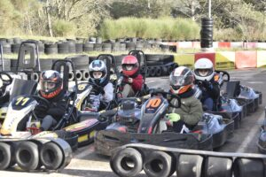
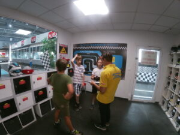
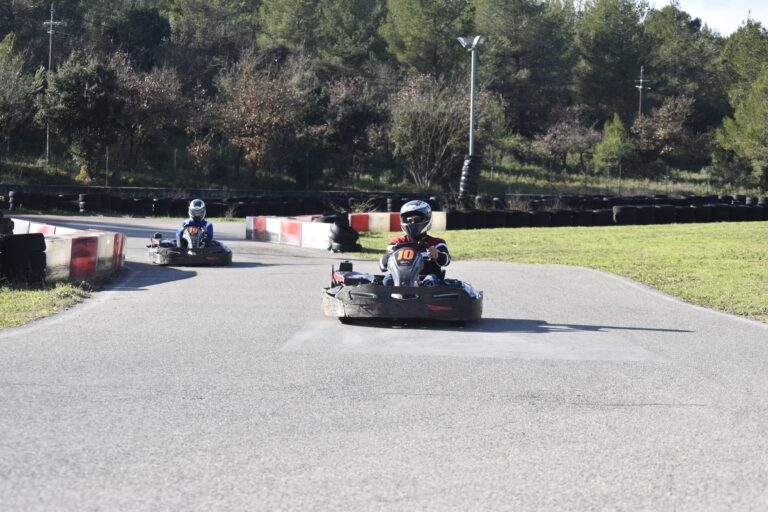
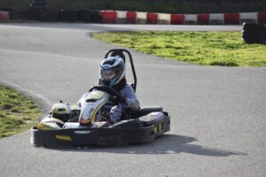

Sur un circuit, on ne peut pas tricher. Pas de pilote automatique, pas de talent supposé. Seulement ce que vous savez faire — et ce que vous allez apprendre.
L'Académie n'est pas une journée isolée. C'est un chemin. Chaque étape prépare la suivante — et la dernière mène au départ d'une vraie course.

Ce que j'enseigne, je l'ai vécu en compétition. Pas dans un manuel — sur la piste, sous pression, avec un chrono qui tourne.
Les victoires et titres qui ont forgé la méthode.
Journées karting et trajectoires circuit — en caméra embarquée, depuis la piste.
Voir la chaîne complète →
